Pokedéx de Pinguim
Gotta catch 'em all!
| Foto | Nome | Tipo | Tamanho | Local | Onde nada? | Extra |
|---|---|---|---|---|---|---|
| 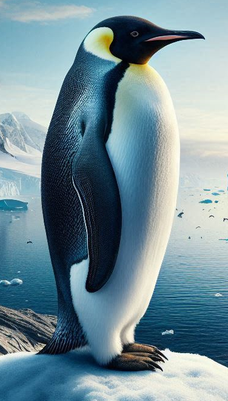 | Pinguim Imperador | Os Grandes Pinguins | 1.30m | Antártica | Águas Frias | Super Mergulhadores |
 |
Pinguim Rei | Os Grandes Pinguins | 90cm | Ilhas Sub-Antárticas | Águas Frias | ?? |
| 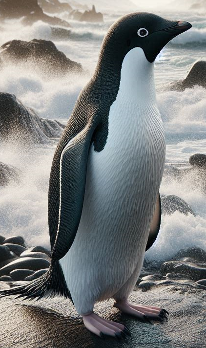 | Pinguim de Adélia | Calda de Escovinha | 70cm | Antártica | Águas Frias | Poucas Ideias |
| 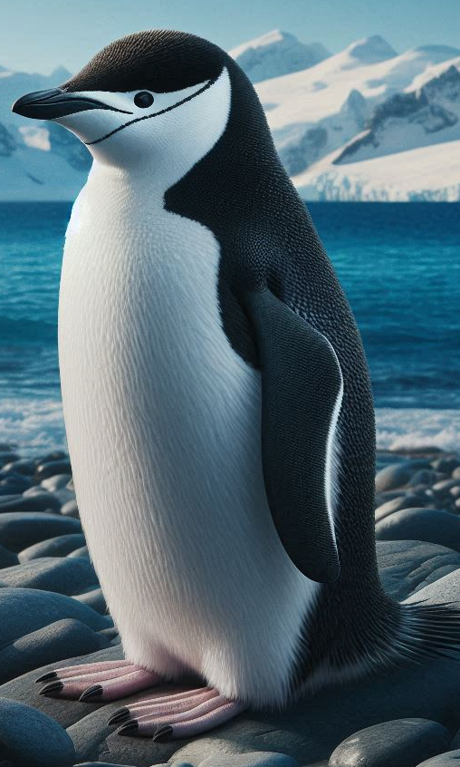 | Pinguim de Barbicha | Calda de Escovinha | 75cm | Ilhas Sub-Antárticas | Águas Frias | Super Sonequinha |
| 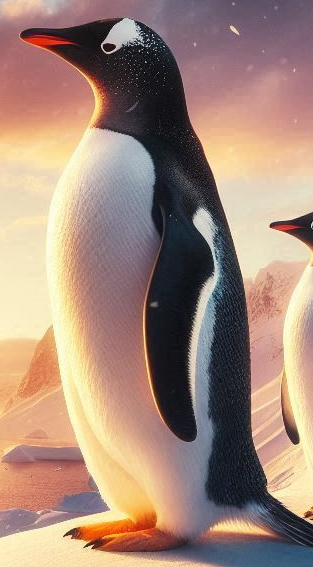 | Pinguim Gentoo | Calda de Escovinha | 80cm | Ilhas Sub-Antárticas | Águas Frias | ??? |
| 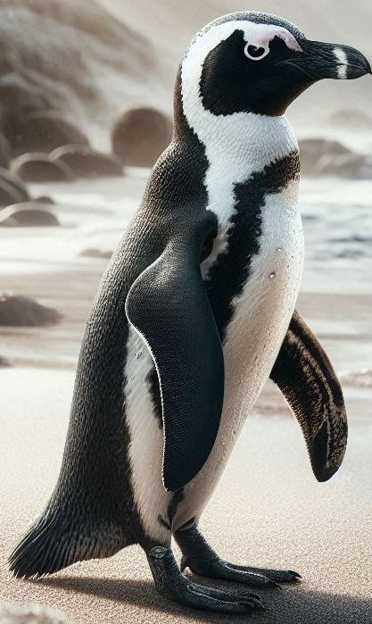 | Pinguim Africano | Forma de Cunha | 65cm | África do Sul | Águas Quentes | Sons Estranhos |
| 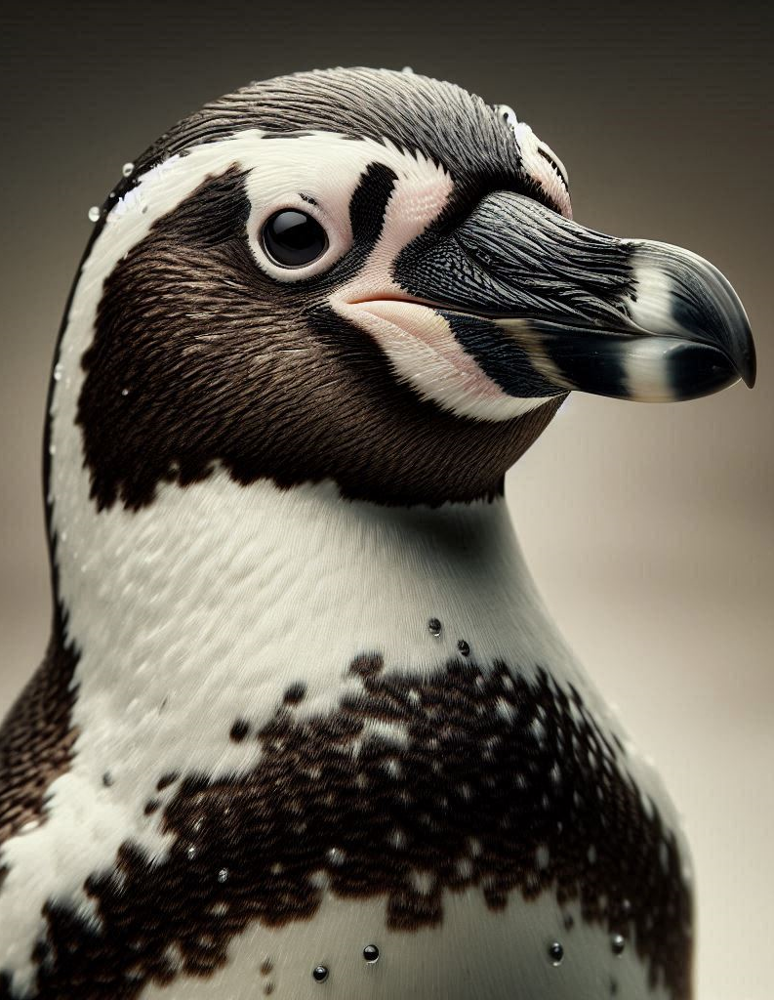 | Pinguim de Humboldt | Forma de Cunha | 65cm | Costa Sulamericana | Águas Quentes | ??? |
| 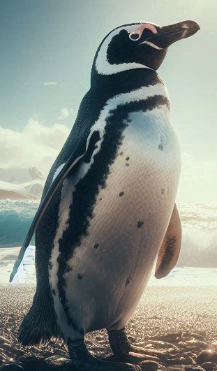 | Pinguim de Magalhães | Forma de Cunha | 65cm | Costa Sulamericana | Águas Frias | ??? |
| 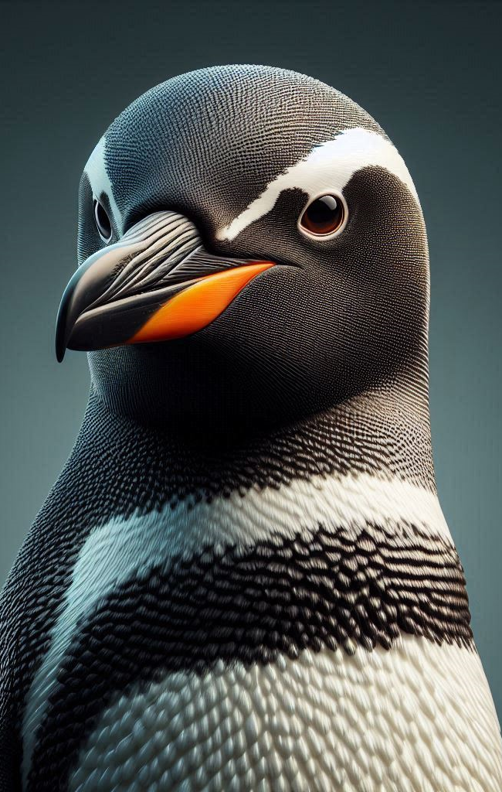 | Pinguim de Galápagos | Forma de Cunha | 45cm | Ilhas Galápagos | Águas Quentes | ??? |
| Foto | Pinguim de Crista Ereta | Pinguins de Crista | 57cm | Ilhas Sub-Antárticas | Águas Frias | ??? |
| Foto | Pinguim das Snares | Pinguins de Crista | 47cm | Ilhas Snares | Águas Frias | ??? |
| Foto | Pinguim de Fiordland | Pinguins de Crista | 47cm | Nova Zelândia | Águas Quentes | ??? |
| 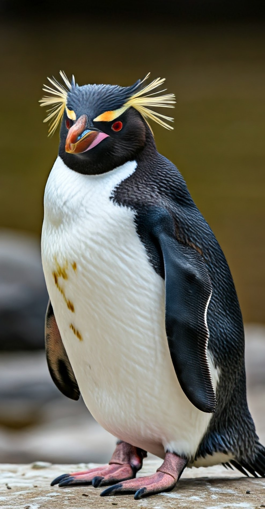 | Pinguim Saltador da Rocha | Pinguins de Crista | 45cm | Ilhas Sub-Antárticas | Águas Frias | ??? |
| 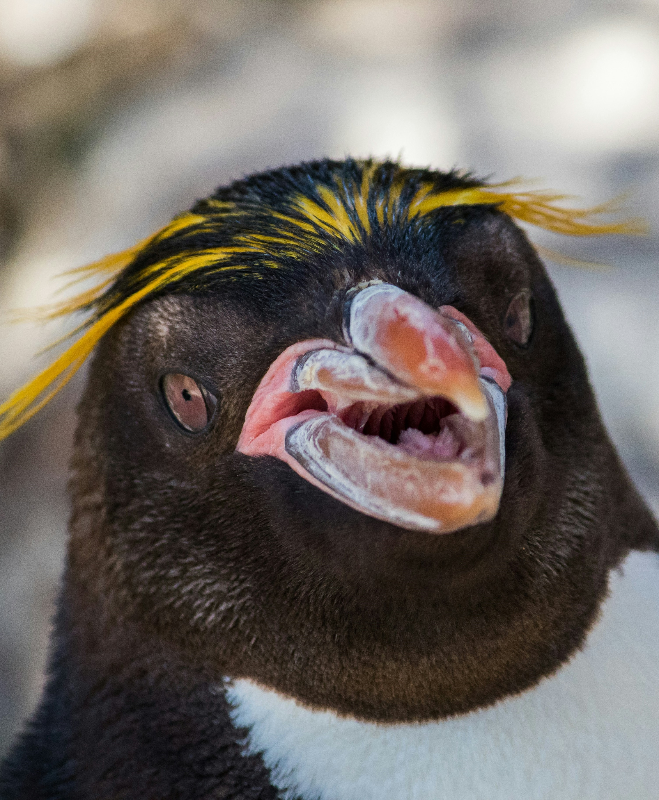 | Pinguim Macaroni | Pinguins de Crista | 60cm | Ilhas Sub-Antárticas | Águas Frias | ??? |
| Foto | Pinguim Real | Pinguins de Crista | 60cm | Ilha Macquarie | Águas Frias | ??? |
| 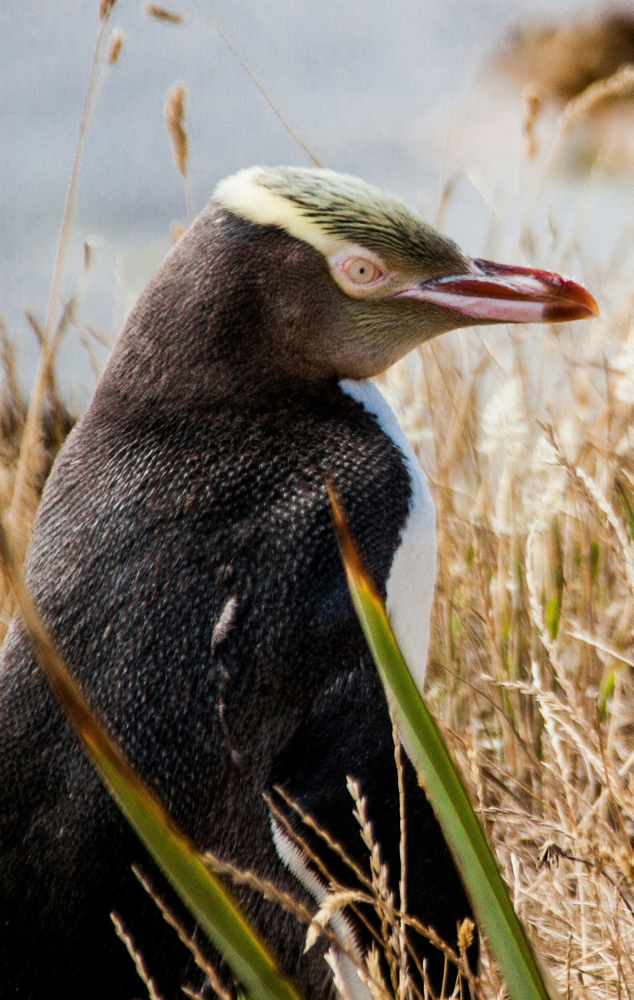 | Pinguim de Olho Amarelo | Grande Mergulhador | 60cm | Nova Zelândia | Águas Quentes | ??? |
| 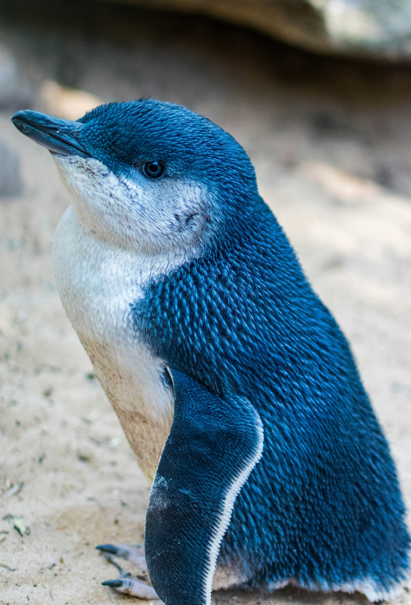 | Pinguim Azul | Pequeno Mergulhador | 35cm | Nova Zelândia/Austrália | Águas Quentes | ??? |